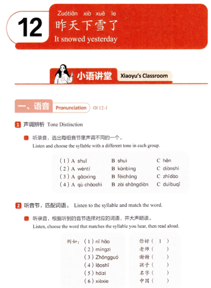

📌 一、语音 Pronunciation · 1 声调辨析 Tone Distinction (Audio 12-1)
1
小语讲堂 · Xiaoyu's Classroom · 1 声调辨析 Tone Distinction
Mendengarkan rekaman audio (Audio 12-1) dan memilih suku kata yang memiliki nada berbeda (different tone) dalam setiap kelompok (A, B, atau C).

🎧Instruksi Soal 1 (Audio 12-1)
听录音，选出每组音节里声调不同的一个。
(Listen and choose the syllable with a different tone in each group / Dengarkan rekaman, lalu pilih suku kata dengan nada yang berbeda di setiap kelompok.)
💡 Klik kartu untuk mendengarkan lafal setiap opsi. Opsi dengan kotak merah adalah jawaban yang memiliki nada berbeda!
( 1 )Soal Nomor 1
1 Suku Kata (Monosyllable)Jawaban: B
A🔊 Dengar
shuǐ
水
air (water)
Nada 3 (ˇ) Turun-Naik
B🔊 Dengar
shuì
睡
tidur (sleep)
Nada 4 (ˋ) ✓ Beda
C🔊 Dengar
hěn
很
sangat (very)
Nada 3 (ˇ) Turun-Naik
💡 Pembahasan Soal (1): Pilihan A shuǐ (水 / air) dan pilihan C hěn (很 / sangat) keduanya memiliki pola Nada 3 (turun-naik). Sedangkan pilihan B shuì (睡 / tidur) memiliki Nada 4 (turun/hentak). Oleh karena itu, B adalah jawaban yang tepat karena memiliki nada berbeda.
( 2 )Soal Nomor 2
2 Suku Kata (Disyllable)Jawaban: A
A🔊 Dengar
wèntí
问题
masalah / pertanyaan
Nada 4 + Nada 2 ✓ Beda
B🔊 Dengar
kànbìng
看病
periksa dokter / berobat
Nada 4 + Nada 4
C🔊 Dengar
diànshì
电视
televisi (TV)
Nada 4 + Nada 4
💡 Pembahasan Soal (2): Pilihan B kànbìng (看病) dan pilihan C diànshì (电视) keduanya memiliki pola kombinasi Nada 4 + Nada 4. Sedangkan pilihan A wèntí (问题) berpola Nada 4 + Nada 2. Maka, A adalah jawaban yang tepat karena kombinasi nadanya berbeda.
( 3 )Soal Nomor 3
2 Suku Kata (Disyllable)Jawaban: B
A🔊 Dengar
gāoxìng
高兴
senang / gembira
Nada 1 + Nada 4
B🔊 Dengar
fēicháng
非常
sangat / luar biasa
Nada 1 + Nada 2 ✓ Beda
C🔊 Dengar
zhīdào
知道
mengetahui / tahu
Nada 1 + Nada 4
💡 Pembahasan Soal (3): Pilihan A gāoxìng (高兴) dan pilihan C zhīdào (知道) keduanya berpola Nada 1 + Nada 4. Sedangkan pilihan B fēicháng (非常) berpola Nada 1 + Nada 2. Maka, B adalah jawaban yang tepat karena kombinasi nadanya berbeda.
( 4 )Soal Nomor 4
3 Suku Kata (Trisyllable)Jawaban: C
A🔊 Dengar
qùchāoshì
去超市
pergi ke supermarket
Nada 4 + Nada 1 + Nada 4
B🔊 Dengar
zàishāngdiàn
在商店
di toko
Nada 4 + Nada 1 + Nada 4
C🔊 Dengar
duìbuqǐ
对不起
maaf (sorry)
Nada 4 + Netral + Nada 3 ✓ Beda
💡 Pembahasan Soal (4): Pilihan A qùchāoshì (去超市) dan pilihan B zàishāngdiàn (在商店) memiliki susunan nada Nada 4 + Nada 1 + Nada 4. Sedangkan pilihan C duìbuqǐ (对不起) memiliki susunan nada Nada 4 + Nada Netral (qīngshēng) + Nada 3. Maka, C adalah jawaban yang tepat karena memiliki pola nada berbeda.
Mendengarkan rekaman audio, memilih kata yang sesuai dengan suku kata yang didengar, lalu membaca nyaring kata tersebut.
🎧Instruksi Soal 2
听录音，根据听到的音节选择对应的词语，并大声朗读。
(Listen, choose the word that matches the syllable you hear, then read aloud / Dengarkan rekaman, cocokkan suku kata pinyin bernomor (1)–(6) dengan kata Hanzi yang tepat, lalu lafalkan dengan lantang.)